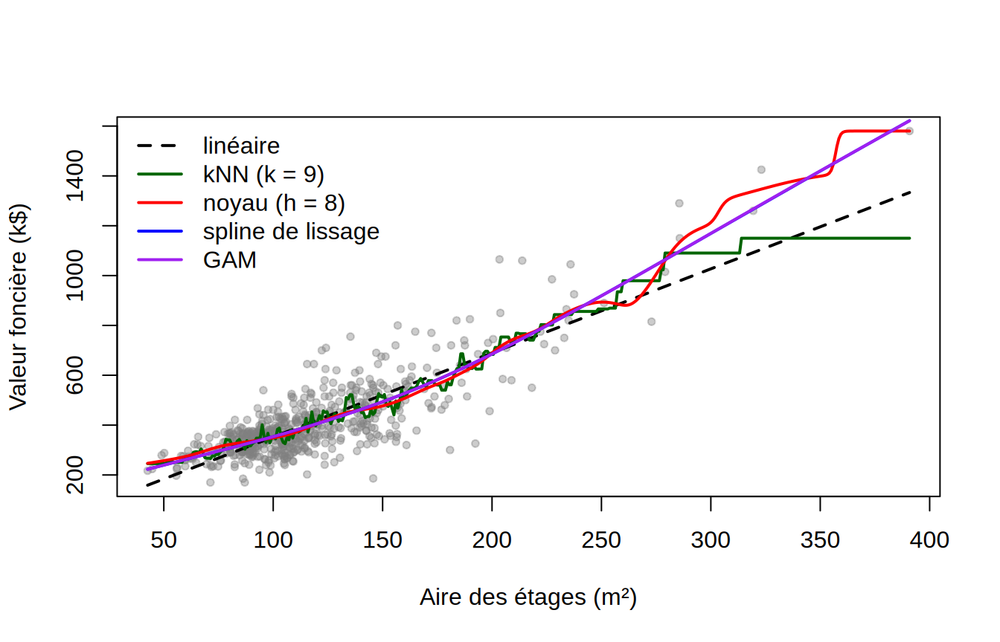
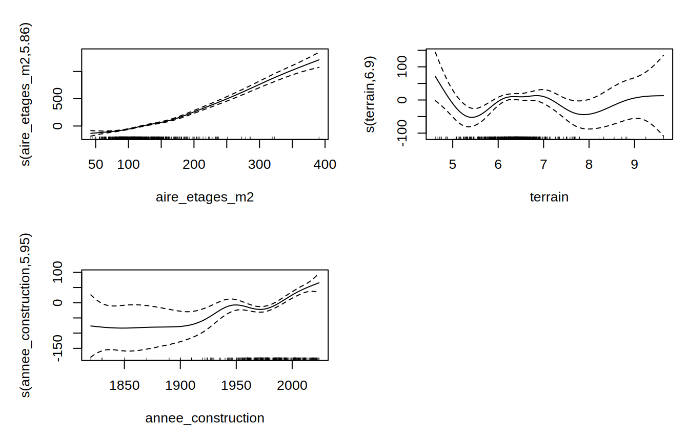

📘SujetSynthèse : kNN, noyau, splines et GAM en compétition
NoteÀ propos de ces solutions
Les réponses ci-dessous sont une proposition de solution. Les erreurs de validation croisée dépendent de la partition tirée ; des écarts de quelques pour cent avec vos résultats sont normaux et ne changent pas les conclusions.
library(FNN)library(KernSmooth)library(splines)library(mgcv)maisons <-read.csv("../notes/Jeux de données/maisons_quebec.csv")maisons$valeur <- maisons$valeur_fonciere_cad /1000# en k$maisons$terrain <-log(maisons$superficie_terrain_m2)maisons$lien <-factor(maisons$lien_physique)n <-nrow(maisons)x <- maisons$aire_etages_m2y <- maisons$valeursummary(maisons[, c("valeur", "aire_etages_m2", "superficie_terrain_m2", "annee_construction")])
valeur aire_etages_m2 superficie_terrain_m2 annee_construction
Min. : 170.0 Min. : 42.60 Min. : 101.2 Min. :1820
1st Qu.: 318.0 1st Qu.: 90.97 1st Qu.: 427.2 1st Qu.:1967
Median : 366.0 Median :107.65 Median : 557.4 Median :1979
Mean : 410.6 Mean :117.24 Mean : 686.2 Mean :1980
3rd Qu.: 455.0 3rd Qu.:135.32 3rd Qu.: 705.7 3rd Qu.:1997
Max. :1580.0 Max. :390.80 Max. :15351.4 Max. :2024
Les valeurs vont de 170 k$ à 1,58 M\(, avec une médiane de 366 k\). L’aire des étages va de 43 à 391 m², mais seulement 25 maisons dépassent 200 m² : les grandes maisons sont rares, comme les journées très froides du labo 1. La superficie du terrain est très asymétrique (de 100 m² à 1,5 ha), d’où l’échelle logarithmique.
1. Deux partitions pour la validation croisée
On écrit une fonction qui prend une partition en blocs et une fonction de prédiction (entraînée sur les données d’un bloc, appliquée aux autres), de façon que toutes les méthodes soient évaluées sur les mêmes blocs. La première partition tire les blocs au hasard. La seconde tire au hasard des voisinages entiers (voisinage_code, 336 codes pour 600 maisons) et les répartit en 10 blocs : toutes les maisons d’un même voisinage sont alors dans le même bloc.
Deux maisons du même voisinage se ressemblent : même époque de construction, mêmes dimensions de terrain, même marché local, et surtout une valeur foncière établie par le même évaluateur avec les mêmes comparables. Dans la partition aléatoire, une maison test a presque toujours une voisine de quartier dans l’ensemble d’entraînement, et les méthodes flexibles peuvent en profiter. La partition par voisinages retire cette aide : elle répond à la question « comment ce modèle prédirait-il la valeur d’une maison dans un quartier qu’il n’a jamais vu? », ce qui est plus exigeant et plus proche de l’usage réel d’un modèle d’évaluation. Avec 336 voisinages pour 600 maisons, la plupart ne comptent qu’une ou deux maisons dans l’échantillon, et l’écart entre les deux partitions restera modeste ; il serait beaucoup plus grand avec un échantillon dense.
2. Ajustement des cinq modèles
Chaque modèle est écrit sous la forme d’une fonction predire(ent, test) qui l’ajuste sur ent et prédit test, ce qui servira à la validation croisée ; les paramètres de lissage (\(k\), \(h\)) sont choisis une fois pour toutes sur l’ensemble des données.
Modèle linéaire simple
pred.lin <-function(ent, test) predict(lm(valeur ~ aire_etages_m2, data = ent), test)
kNN, \(k\) choisi par LOOCV (critère PRESS)
ks <-1:150press <-sapply(ks, function(k) knn.reg(train =matrix(x), y = y, k = k)$PRESS)k.min <- ks[which.min(press)]k.min
[1] 9
pred.knn <-function(ent, test)knn.reg(train =matrix(ent$aire_etages_m2), test =matrix(test$aire_etages_m2), y = ent$valeur, k = k.min)$pred
Noyau gaussien, \(h\) choisi par LOOCV
L’estimateur de Nadaraya-Watson est linéaire en \(Y\) : on calcule le LOOCV par la formule explicite des notes (voir le labo 1), puis on prédit directement à partir des poids gaussiens, ce qui évite d’interpoler la grille de locpoly. locpoly avec degree = 0 et le même bandwidth donne la même courbe.
cv.n <-function(h, x, y) { W <-dnorm(outer(x, x, "-") / h) W <- W /rowSums(W) f.hat <-as.vector(W %*% y)mean(((y - f.hat) / (1-diag(W)))^2)}hs <-seq(2, 40, by =0.5)cv.h <-sapply(hs, cv.n, x = x, y = y)h.min <- hs[which.min(cv.h)]h.min
L’aire des étages est mesurée au dixième de mètre carré et 183 maisons partagent leur valeur avec une autre. Les ex æquo sont assez nombreux pour que cv = TRUE déclenche l’avertissement de smooth.spline (il regrouperait les maisons de même aire avant d’exclure un groupe à la fois) ; on laisse donc le GCV choisir \(\lambda\), comme au labo 2.
Les erreurs sont en (k$)² ; leur racine, d’environ 85 k$, est l’ordre de grandeur de l’erreur de prédiction, soit près du quart de la valeur médiane. Trois constats :
Les méthodes flexibles font mieux que la droite, mais de peu : le gain est d’environ 10 % pour la meilleure (le GAM), contre un facteur 3 au labo 1. La relation entre la valeur et l’aire est convexe (le prix du mètre carré de plancher croît avec la taille, d’environ 2,5 k$ pour une petite maison à près de 4 k$ pour une grande), mais la courbure est douce et c’est le bruit qui domine, pas le biais de la droite. Deux maisons de même aire peuvent différer du simple au double selon le quartier, le terrain et l’état du bâtiment, variables que ce modèle ignore.
kNN fait même moins bien que la droite. Avec \(k = 9\) voisins, sa variance est élevée dans une relation très bruitée, et son escalier ne gagne rien en biais par rapport à une courbe lisse. C’est le cas typique où la flexibilité coûte plus qu’elle ne rapporte.
La partition par voisinages donne des erreurs un peu plus élevées pour toutes les méthodes, de l’ordre de 2 % : la ressemblance entre maisons d’un même quartier aide un peu toutes les méthodes, mais, l’échantillon étant très dispersé (une ou deux maisons par voisinage), l’effet est modeste et le classement des méthodes ne change pas.
4. Les cinq courbes ajustées
xg <-seq(min(x), max(x), length.out =400)grille <-data.frame(aire_etages_m2 = xg)plot(x, y, pch =20, col =adjustcolor("grey50", 0.4), xlab ="Aire des étages (m²)", ylab ="Valeur foncière (k$)")lines(xg, pred.lin(maisons, grille), col ="black", lwd =2, lty =2)lines(xg, pred.knn(maisons, grille), col ="darkgreen", lwd =2)lines(xg, pred.nw(maisons, grille), col ="red", lwd =2)lines(xg, predict(mod.sp, xg)$y, col ="blue", lwd =2)lines(xg, predict(mod.gam, grille), col ="purple", lwd =2)legend("topleft", c("linéaire", paste0("kNN (k = ", k.min, ")"), paste0("noyau (h = ", h.min, ")"),"spline de lissage", "GAM"),col =c("black", "darkgreen", "red", "blue", "purple"), lwd =2, lty =c(2, 1, 1, 1, 1), bty ="n")

Jusqu’à 200 m², là où se trouvent 96 % des maisons, les cinq courbes sont presque confondues : une courbe douce, de 240 k$ pour 50 m² à 350 k$ pour 100 m² et 500 k$ pour 150 m², dont la droite s’écarte peu. Les différences apparaissent pour les grandes maisons, où les observations sont rares et dispersées :
la droite continue tout droit et sous-estime les plus grandes maisons, dont la valeur croît plus vite que l’aire ;
la spline de lissage et le GAM, presque identiques (même pénalité, bases et critères voisins), se courbent vers le haut de façon régulière : c’est la convexité qui vaut à ces deux méthodes le meilleur score ;
la courbe à noyau suit les mêmes grandes lignes, mais avec \(h = 8\) m² elle forme des bosses autour des quelques maisons isolées de 250 à 390 m², chacune tirant la courbe à elle ;
la courbe kNN est en escalier et, pour les plus grandes maisons, ses 9 voisins s’étendent loin vers la gauche : elle plafonne là où les autres courbes montent, le défaut de bord déjà vu au labo 1.
Contrairement au labo 2, où toutes les heures avaient le même effectif, il y a ici une zone peu dense à droite, et c’est elle qui départage les méthodes.
5. Extension multivariée
On ajoute la superficie du terrain (en log), l’année de construction et le type de bâtiment. Le GAM additif est comparé au modèle linéaire multiple, au GAM univarié et à un kNN à trois variables, sur les mêmes blocs qu’au point 3. Pour kNN, les trois variables explicatives sont standardisées pour que la distance euclidienne ne soit pas dominée par l’année (de 1820 à 2024) ; c’est une version simplifiée de la distance de Mahalanobis des notes.
Estimate Std. Error t value Pr(>|t|)
(Intercept) 419.78980 4.097221 102.4571911 0.000000e+00
lienEn rangée, plusieurs côtés -33.22779 20.428088 -1.6265738 1.043733e-01
lienEn rangée, un côté 16.50439 22.762326 0.7250748 4.686999e-01
lienJumelé -51.52201 12.287638 -4.1929953 3.185398e-05
plot(mod.gam3, pages =1, shade =TRUE, scale =0)

Avec les trois variables supplémentaires, l’erreur du GAM baisse d’environ 13 % par rapport au GAM univarié, et le GAM additif bat le modèle linéaire multiple d’environ 14 %. Les degrés de liberté effectifs et les graphiques disent où se trouve la non-linéarité :
aire_etages_m2 : effet convexe, le même qu’au point 4, encore plus marqué une fois les autres variables prises en compte : la pente passe d’environ 1,5 k$ par mètre carré pour les petites maisons à plus de 5 k$ pour les grandes ;
annee_construction : effet non linéaire et non monotone. À aire, terrain et type égaux, les maisons d’avant 1920 valent nettement moins (environ 80 k$ sous la moyenne), la courbe monte jusqu’aux années 1940, forme un plateau avec un léger creux dans les années 1970, puis remonte régulièrement pour les constructions récentes (environ 65 k$ au-dessus de la moyenne en 2024). Une droite, qui ne peut rendre que la tendance générale, manque le plateau et surestime les maisons centenaires ;
terrain : c’est le terme à regarder avec méfiance. Ses degrés de liberté effectifs sont élevés, mais sa statistique \(F\) est faible, et la courbe oscille entre \(-50\) et \(+15\) k$ sans forme interprétable. Avec une base plus petite (s(terrain, k = 4)), l’effet devient plat et non significatif, et retirer la variable n’augmente l’erreur de validation croisée que de 1 à 2 %. Dans cet échantillon, à aire et année de construction égales, la superficie du terrain ne vaut à peu près rien, sans doute parce que les grands terrains sont en périphérie, où le sol est moins cher ; la courbe ondulée est un ajustement du bruit, et un bon réflexe est de réduire \(k\) ou d’abandonner le terme ;
lien : à aire, terrain et année égaux, une maison jumelée vaut environ 50 k$ de moins qu’une maison détachée ; les maisons en rangée sont trop peu nombreuses (43) pour que leurs coefficients soient précis.
kNN à trois variables fait moins bien que tous les autres modèles, y compris la droite à une variable : c’est le fléau de la dimension. En trois dimensions, les 10 plus proches voisins d’une maison sont déjà éloignés dans au moins une direction, et la moyenne locale mélange des maisons qui ne se ressemblent pas ; de plus, la distance euclidienne traite les trois variables comme équivalentes alors que l’aire explique l’essentiel de la valeur. Le GAM contourne le problème en estimant trois courbes univariées, chacune sur les 600 maisons, et en les additionnant.
La partition par voisinages pénalise un peu plus les modèles à plusieurs variables que le GAM univarié : le terrain et l’année sont justement les variables qui caractérisent un quartier, et prédire un voisinage inconnu les rend un peu moins utiles. Le classement ne change pas.
6. Conclusion : quelle méthode choisir?
Les résultats numériques donnent une première leçon, différente de celle du labo 1 : avec une seule variable explicative dont l’effet est presque linéaire et un bruit important, les méthodes flexibles n’apportent presque rien, et la plus flexible d’entre elles (kNN) fait même moins bien que la droite. La flexibilité ne paie que s’il y a de la non-linéarité à capter, et son coût en variance est réel quand \(n\) est modeste. La seconde leçon vient de la partie multivariée : le vrai gain est venu des variables ajoutées, et c’est le GAM qui a su les exploiter, là où kNN s’est effondré. Il a aussi signalé lui-même, par un terme oscillant à faible statistique \(F\), qu’une des variables n’apportait rien.
kNN est le choix le plus simple à comprendre et à implémenter, robuste dans les zones peu denses grâce à son voisinage adaptatif, et il s’étend sans effort à la classification. Ses défauts : courbe en escalier, aucun paramètre interprétable, traitement arbitraire des ex æquo, variance élevée quand le bruit est fort, et surtout une dégradation rapide quand le nombre de variables augmente (fléau de la dimension), ce que le point 5 illustre sans ambiguïté.
Le noyau donne une courbe lisse et continue, préférable pour visualiser une tendance ou estimer une dérivée (ici, le prix marginal du mètre carré). Il souffre de la fenêtre fixe dans les zones peu denses (bosses autour des grandes maisons isolées, biais de bord) et du même fléau de la dimension que kNN. Les polynômes locaux (degree = 1) corrigent le biais de bord.
Les splines (de régression, naturelles ou de lissage) sont des modèles linéaires en \(\boldsymbol\beta\) : on dispose des moindres carrés, des intervalles de confiance et des tests usuels, et le lissage est contrôlé par un seul paramètre \(\lambda\) choisi automatiquement. C’est la méthode de choix pour une ou deux variables lorsqu’on veut une courbe lisse avec une inférence propre ; c’est elle qui a donné la meilleure courbe univariée ici. Elles ne se généralisent cependant pas directement à plusieurs variables : le nombre de fonctions de base explose avec la dimension.
Le GAM est la méthode à privilégier dès qu’il y a plusieurs variables explicatives. En imposant l’additivité, il contourne le fléau de la dimension (chaque \(f_j\) est une courbe univariée estimée sur toutes les données), il reste interprétable (un graphique par variable, des degrés de liberté effectifs qui disent quels effets sont linéaires, des coefficients ordinaires pour les facteurs comme le type de bâtiment), il offre des tests et des bandes de confiance, et il s’étend aux réponses binaires et de dénombrement par la fonction de lien (labo 3). Son coût est l’hypothèse d’additivité elle-même, qui ne tient pas toujours (au labo 3, la forme du cycle journalier dépendait de la saison) et que l’on peut relâcher localement par des termes d’interaction ti ou te quand les données le justifient.
En pratique : kNN ou noyau pour une exploration rapide en une ou deux dimensions ou pour la classification ; splines pour une courbe univariée avec inférence ; GAM pour tout problème à plusieurs variables où l’on veut à la fois flexibilité et interprétabilité. Dans tous les cas, le fil conducteur est le même : la complexité (\(k\), \(h\), \(\lambda\)) se choisit par validation croisée, et la comparaison entre méthodes se fait sur une erreur de validation croisée calculée sur les mêmes blocs, avec des blocs qui respectent la structure des données (quartiers entiers ici, blocs de temps pour des données chronologiques) si l’on veut une estimation honnête de l’erreur sur de nouvelles observations.